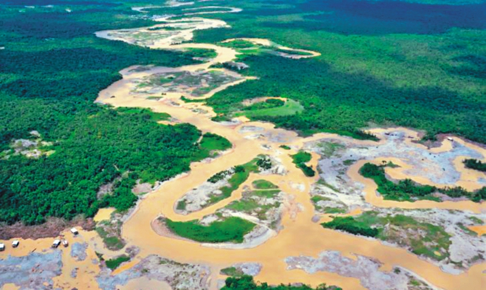

CONFLICTO ARMADO Y EXPLOTACION DE ORO EN COLOMBIA
|
En Colombia la minería y la extracción de minerales es muy importante siendo
que de esta trabajan y viven muchas familias de regiones , además se llega a tal
punto que estas dependen de su extracción ya que esa es su realidad y su economía .
Al principio estas tierras todavía fértiles y ricas en minerales vivían afectadas por las
fuerzas armadas o mejor conocidas como las FARC que eran los dueños y señores de ese
pedacito de Colombia ; Los cuales decidían quien debía ser desplazado y quien resguardado
, Luego de un tiempo las multinacionales y demás se adueñan de esos territorios dando paso
a la economía y un gran avance al bloqueo . Aunque como todo que nos da plata y genera
riqueza y de lo cual es muy beneficioso se acaba , ya que el humano es codicioso y quiere
acabar y llenarse de riquezas que sabe y que no le importa que algún día se va a acabar .
Hoy en día una multinacional gana casi el 50 % de todo lo que manda a hacer en trabajos
que están sin supervisar y a duras penas se tiene conocimiento de como se deben realizar
y como tiene que ser o puede que ser usado para ser amigable con el planeta de alguna
forma , el otro 50 % no es solo para los obreros o mineros sino que ellos viven con un
40 % , un 3% en abogados y un 7% en revisiones de servicios y demás , Lo cual es muy
injusto pero claro si tu necesitaras cubrir necesidades básicas que por cierto
deberían ser cubiertas por el estado , no te podrías a pensar cuan injusto es ya que
necesitas llevar dinero a una familia .
Las multinacionales o empresas nunca se mantienen contentas , entre
mas tienen mas quieren y son un circulo vicioso , que no se acabara
hasta que ellos no hallan acabado hasta con el ultimo granito de oro .
Por eso la gente debería saber que tiene que cuidar lo que es suyo y respetar
, además se necesita saber que como vamos ahora necesitamos 5 planetas para vivir
como ricos y no como pobres y poder sostener ese explotamiento de recursos. También
como personas de bien deberíamos saber que explotar o generar minería sin un buen
uso es un delito por el cual muchos podrían pagar cárcel , pero que en el país que
vivimos entre mas corrupto mas recurrente lo hacemos. |